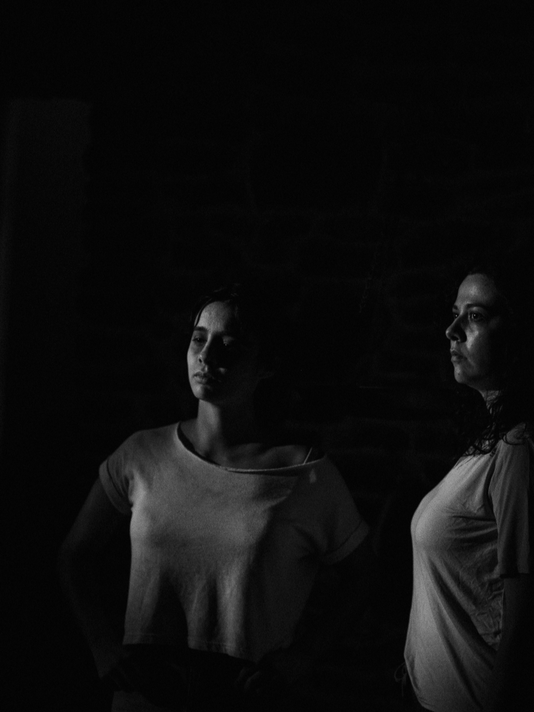
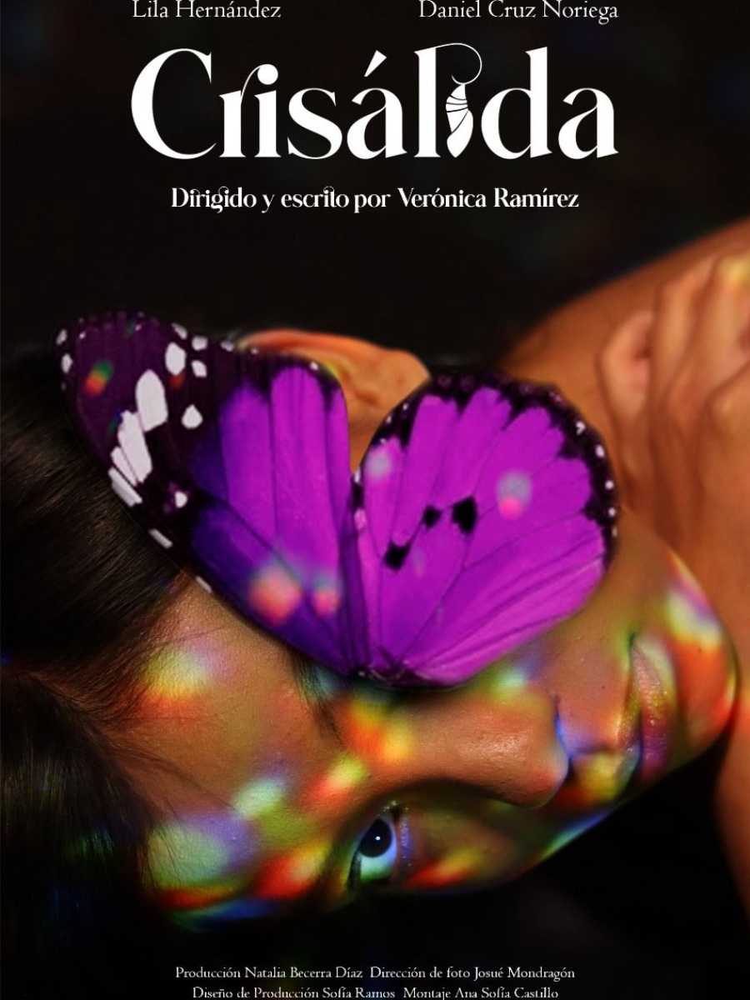
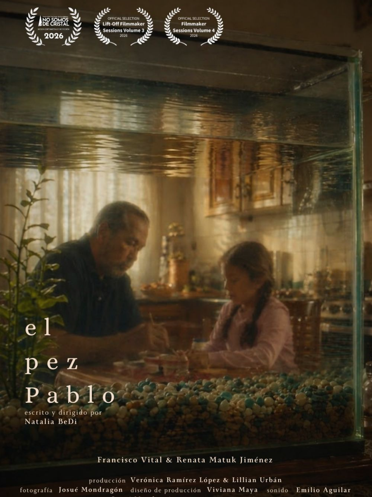
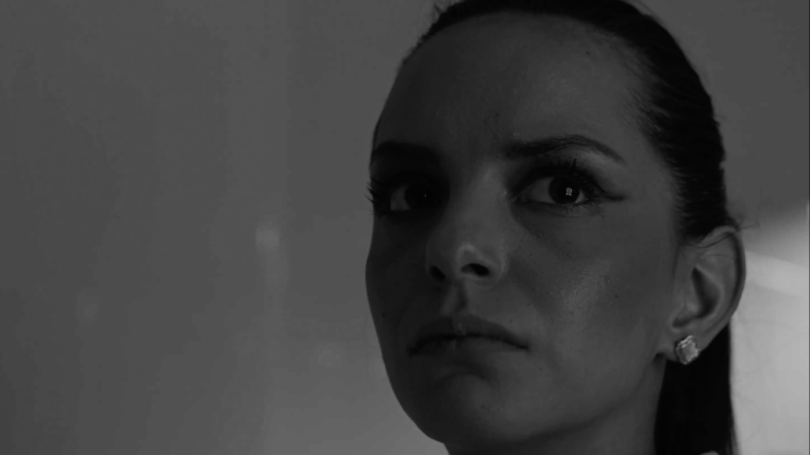
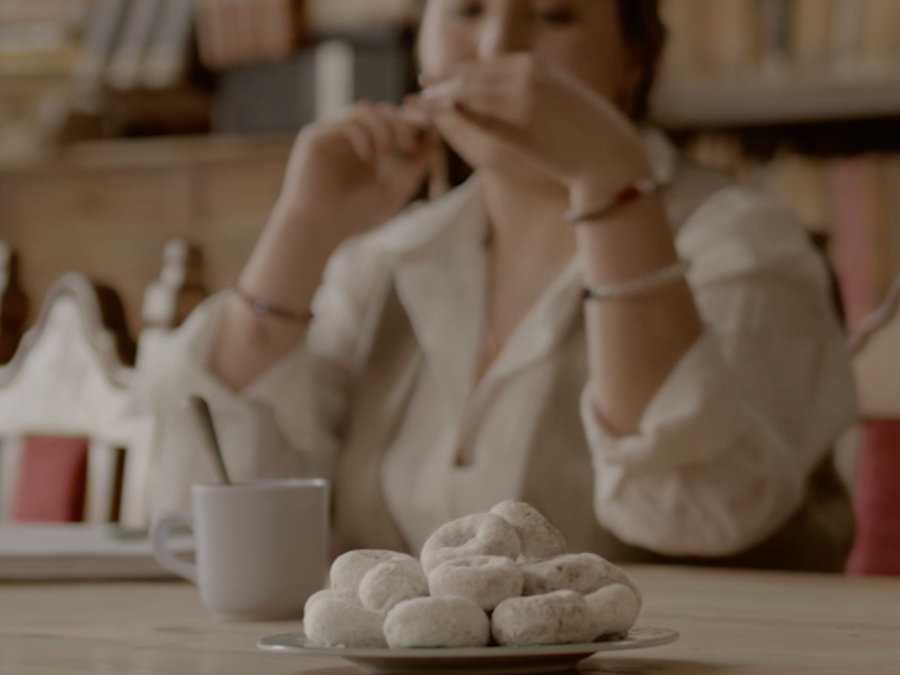
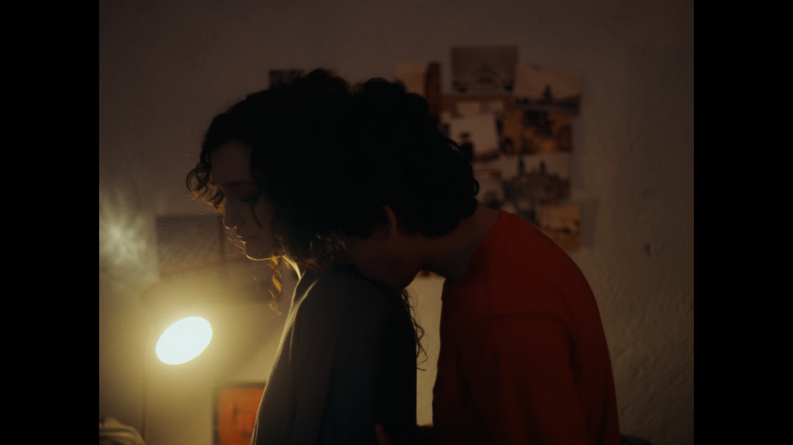
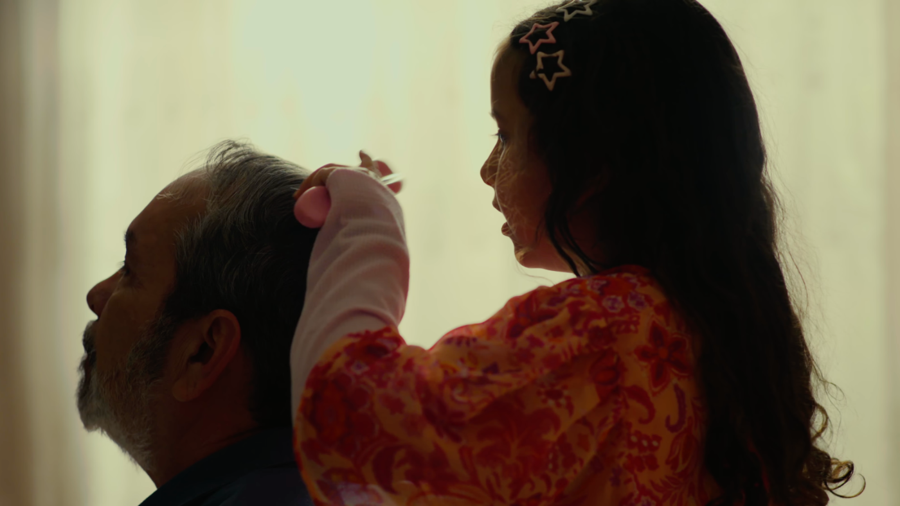

Where my approach to production was shaped.
Across 15 short films — university and independent projects — I've worked at every stage of the process and in nearly every department, taking on different roles from one project to the next: directing, writing, producing, cinematography and lighting.
Every producer role I take on today carries the same instinct: holding the creative idea while managing the details and the people who make it real.
My strongest pull: directing, writing & producing.
The work that lives at the intersection of creative vision and team leadership. I love shaping a story and then building and guiding the team that brings it to life.
Directing
Writing
Producing
Cinematography
Lighting
Involved at every stage.
From pre-production through post — script and planning, the shoot, and the edit. I've directed performances from both adult and first-time child actors, and I shoot and light on professional cinema and mirrorless systems.
Pre-production
Script, planning and building the team and the vision.
The shoot
Directing performance, camera and lighting on set.
Post
The edit — shaping the story to its final form.
Pocket 6K
Cinema body for high-end image and color.
Cinema-line camera for professional shoots.
performances
Directed both seasoned and first-time child actors.




Paréntesis · Gaffer01
Donitas Bimbo · DP02
Tierra Fértil · 2nd AC03
Pez Pablo · Scene05Selected stills · Paréntesis, Donitas Bimbo, Tierra Fértil & Pez Pablo.